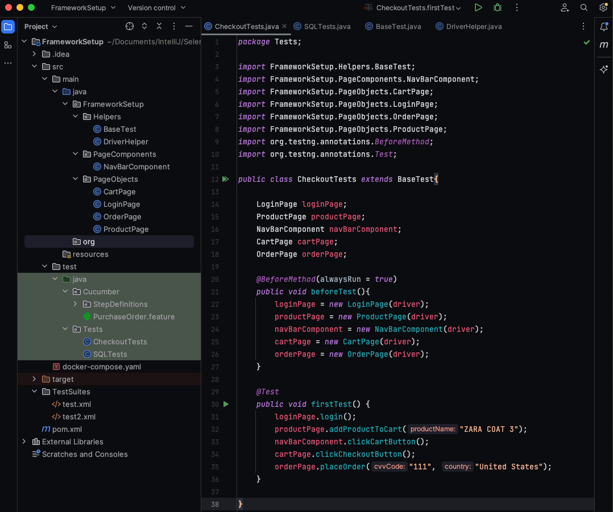
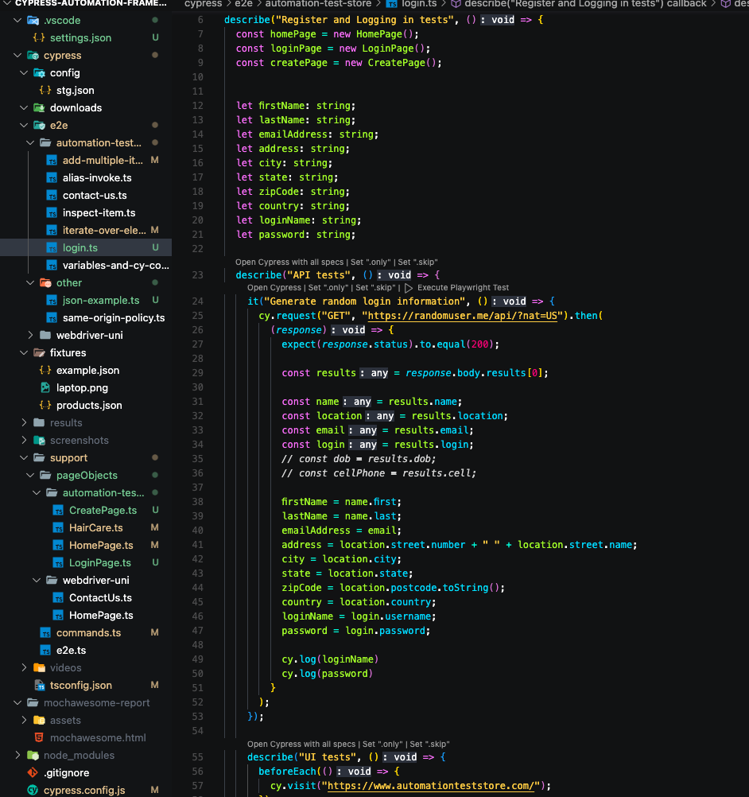

Test Reliability
Automated tests must be deterministic. Inconsistent tests erode team trust and slow releases.
Automated tests must be deterministic. Inconsistent tests erode team trust and slow releases.
Frameworks should be architected for concurrency from day one to scale with CI pipelines.
Every test should be independent, with no hidden shared state between scenarios.
Test code should follow software engineering standards: clear abstractions, readability, and reuse.
Portfolio focused on framework design, platform-scale reliability, test architecture, and CI execution quality.

Designed a regression platform for parallel web execution in a multi-application enterprise environment.
Impact: Increased coverage to 300+ UI/API scenarios and reduced regression runtime by 6-7x.

Built a TypeScript-first automation architecture that unifies API and UI flows for integration-heavy features.
Impact: Improved release confidence by validating integration behavior earlier in CI cycles.

Implemented a data orchestration layer for isolated execution across environments and parallel test streams.
Impact: Contributed to ~80% flakiness reduction by removing static data dependencies.
Short technical writing focused on test architecture, framework design, and reliability.